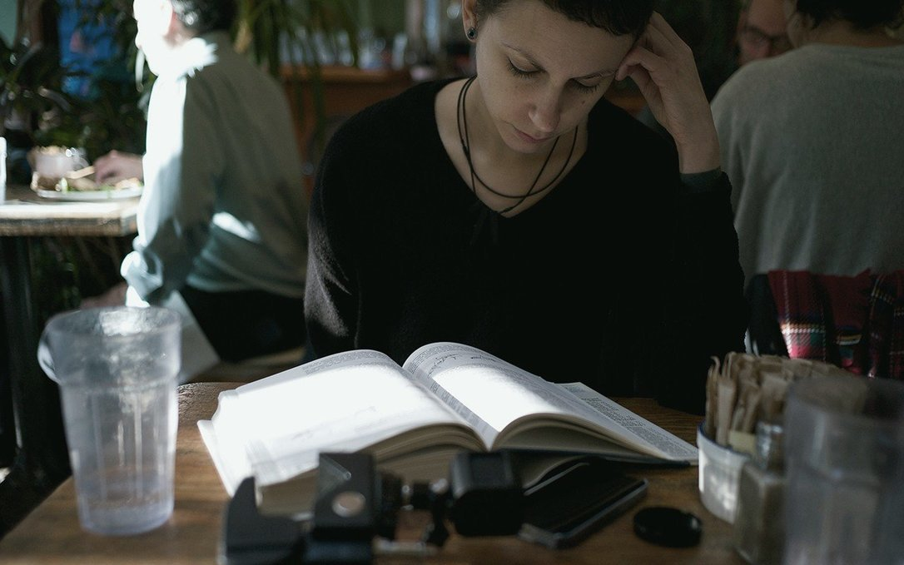
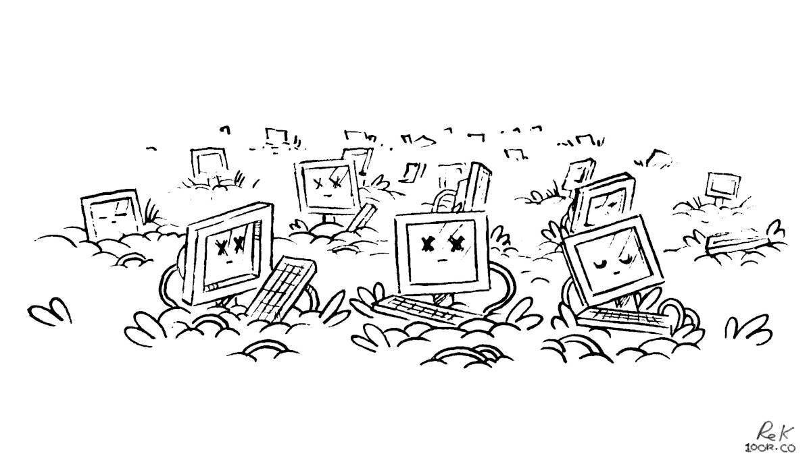

mission
We founded Hundred Rabbits with the goal of building a platform that could enable us to dedicate our time to the creation of small, playful, free, open-source software, while considering the impact of our works on the environment, and optimizing toward living more sustainably. We've adapted our software and projects around the limitations of our vessel instead of increasing its limits. We learned to appreciate these limits and think that they make our work better.
The benefits of many modern technologies today are illusory, and undermine people's self-sufficiency, freedom, and dignity. Ivan Illich proposed the concept of "convivial tools" that honor human agency and creativity. Convivial tools are not proprietary, in the style of many software today, but open-ended, flexible instruments that serve the needs and interests of ordinary individuals and communities.
We want our work to be an equal blend of aesthetics, playfulness, and practicality. A well-written and functional software is necessary, but an attention to beauty and play enriches a project, creates a sense of culture, and more importantly it motivates us to pursue deeper, more meaningful lives in a world designed to dispossess and distract us.

We aim to keep our software small, portable and build from first principles to keep them participatory.
Work that is done to obfuscate the inner workings of a program, or make it difficult to compile, turns someone into a mere user. If it's too hard for people to teach themselves, we may never get to hear their ideas. Ideas from a plurality of people make art, software and knowledge transmission more accessible and resilient. Diversity is important in nearly all aspects, whether it's with computers, or with life itself. A polyculture of tools and systems distributes the surface of attack and creates resilience. Viruses can attack a single crop, or a single computer architecture. The more services, or resources are centralized, the more power is concentrated into fewer hands and more easily taken over.
The abundance of digital storage and processing power has caused an explosion in wastefulness, which shows in things like ridiculous hardware requirements for computing even the most trivial tasks. There is a new movement in tech inspired from permaculture, called permacomputing that aims at only using computing when it has a strengthening effect on ecosystems.
Instead of planned obsolescence, permacomputing practices planned longevity, reuse and repair of existing technology and approaches waste as a resource. Designing for Disassembly ensures that all elements of a product can be disassembled for repair and for end of life. This allows for and encourages repairs, with the result that a product's life cycle is prolonged; and it allows for a product to be taken apart at the end of its life so that each component can be reclaimed.
As Hundred Rabbits, we have decided to focus on documenting, and archiving, means of reusing and repairing older devices and programs. All of our tools are designed to work offline first, operate with little-power on older devices and operating systems. Operating this way, we can keep creating content while off-grid, and when our power and connectivity is limited.
story
Back in 2016, when first operating on a sailboat, we experienced frequent failures with both software & hardware, largely due to our small energy storage and lack of reliable connectivity. The solution was to create tools that would be better suited to the limits of our new situation. The objective was to replace the bloated, closed-source or subscription software that we were using to do creative work, such as Photoshop, Xcode and Ableton. We were somewhat familiar with web technologies, so we decided to build our programs on this new up and coming framework called Electron.
While solving some of our issues, Electron was rapidly increasing in size and despite it being open-source, soon joined the rest of the software that we wanted to do away with. Our focus shifted toward reducing our energy use, and to ensure reliability we began removing dependencies.
To transition toward our new goals, we developed offline web versions as temporary stand-ins while researching ways to build more resilient software. We eventually ported our tools to C, but while we had achieved ideal energy usage, portability was still an issue, so we kept looking. We learnt 6502 Assembly, seeing players run our games as NES roms on all these different platforms gave us an idea.
In 2021, we began designing a small virtual machine with a focus on implementability; meaning that moving forward, the applications themselves will no longer need to be ported. Instead, to make any one program available on a new platform, the emulator would be the only code needing to be modified, which is explicitly designed to be easily implemented.
This is where we are now. Uxn may solve our cross-platform issues, while being extremely light. It took us a long while to get here, we hope that one day the Uxn versions of our software replace the desktop and web versions [16.05.21].
Go slow, and fix things.